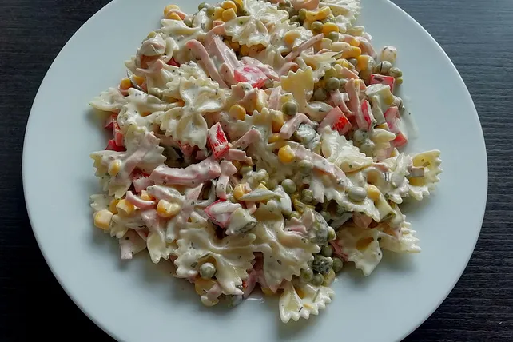

Veganer Nudelsalat

We are going to make this awesome tasting, very simple noodle salat!
This easy vegan noodle salad is THE hit at every barbecue!
Zutaten
- 500g Nudeln
- 140g Erbsen
- 140g Mais
- 500g Sojajoghurt
- 300g vegane Mayo
- vegane Fleischwurst nach Bedarf
- Gewürzgurken nach Bedarf
- 3 EL Gurkenflüssigkeit
- 2 EL Gemüsebrühepulver
- 1 TL Paprikapulver
- 2 TL Knoblauchpulver
Zubereitung
- Die Nudeln nach Packungsanweisung kochen. In der Zwischenzeit Gurken in dünne Scheiben schneiden und die vegane Fleischwurst würfeln.
- In einer großen Schüssel Erbsen, Mais, Sojajoghurt, vegane Mayo, Gemüsebrühepulver, geschnittene Gewürzgurken, gewürfelte Fleischwurst, Paprikapulver, Knoblauchpulver und Gurkenflüssigkeit vermengen.
- Die fertigen Nudeln am Ende zu den restlichen Zutaten geben und gut rühren.